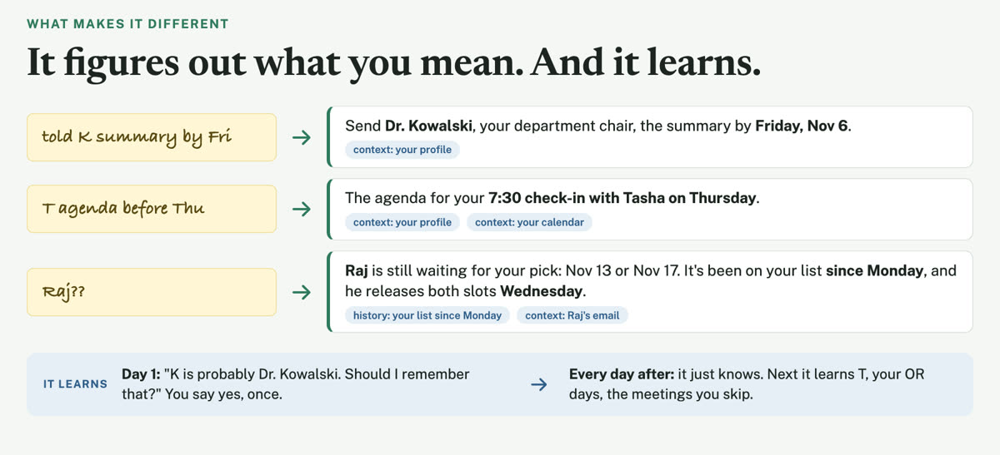

Companion to the talk Practical Uses for AI Tools as an Administrative Leader in Medicine · SAAAPM 2026 · Chicago · November 14
Build your own digital chief of staff
An AI assistant that reads your calendar, your email and the quick notes on your phone, gives you a short brief each morning, and learns how you work.
It catches what slips: the canceled meeting still on your calendar, two emails that disagree, the promise you jotted in a hallway.
The kit is free. It runs in the AI assistant you already use for work.
Start setupSix steps, once. Then a short routine each morning.

What you'll need
- The AI assistant your institution approved for this use, including email and calendar, such as Copilot, ChatGPT, Claude or Gemini, signed in with your work account.
- A computer, for setup and the morning brief.
- Your phone, for the note where you jot what you promised.
Before you start
- No patient information. It's for administrative work.
- It drafts. You decide what gets sent.
See how it works
- Walk-through: twenty slides, from what it catches to how to set it up
- Short overview: ten slides
- The kit folder (opens in a new tab): the same material as files in Google Drive
This is a pilot. It works today, and it changes as people try it. Feedback is welcome.